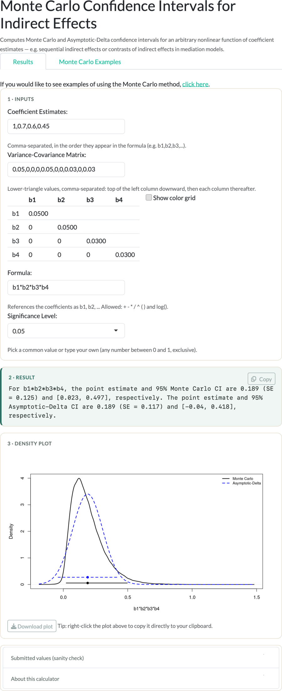

Monte Carlo and Asymptotic-Delta confidence intervals for an arbitrary user-defined function of coefficient estimates.
Computes Monte Carlo and Asymptotic-Delta confidence intervals for a nonlinear function of coefficient estimates — e.g. sequential indirect effects or contrasts of indirect effects in mediation models. Inputs: coefficient estimates \(b_1, b_2, \ldots\), their variance-covariance matrix, a formula referencing the coefficients (allowed operators: + - * / ^ and log()), and a significance level \(\alpha\).

Citation forthcoming.